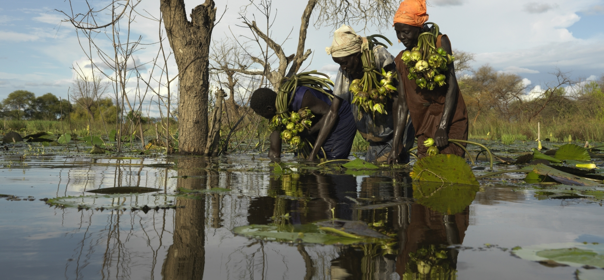
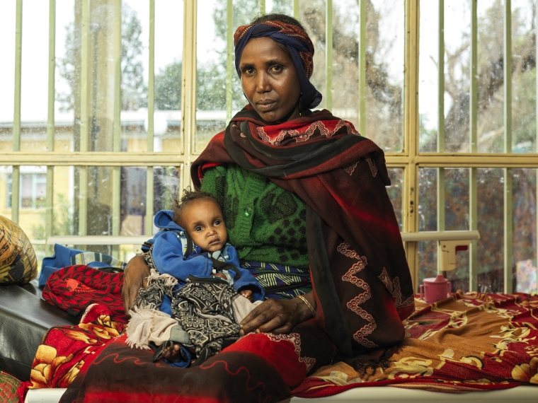
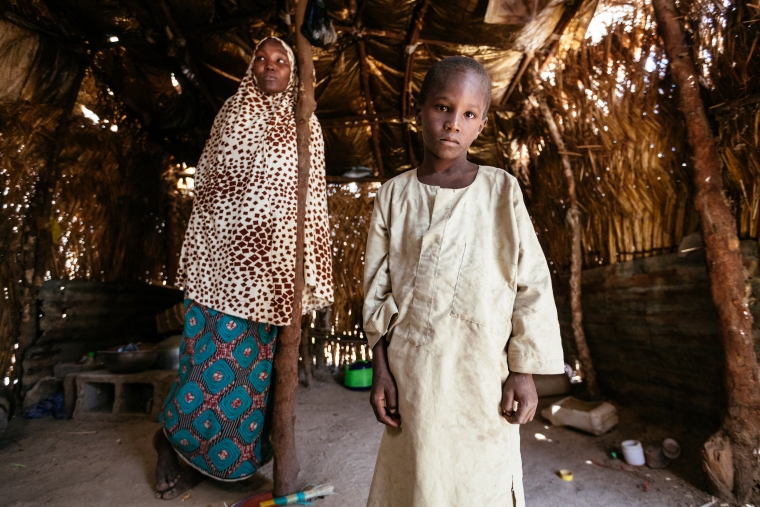
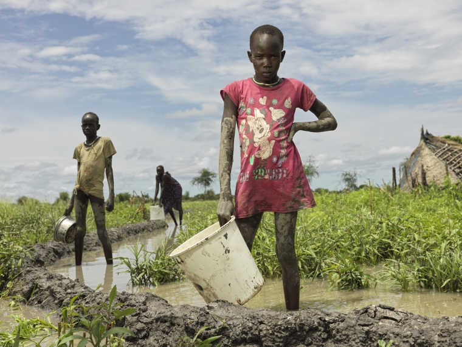
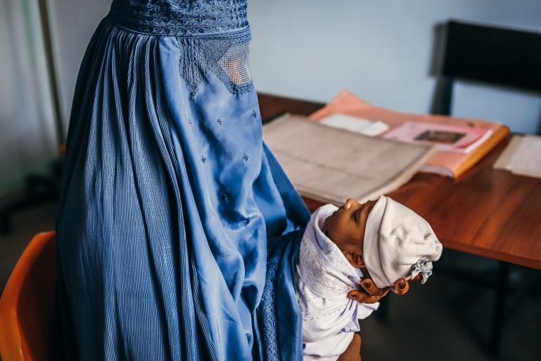

posted by Hannah White on March 07, 2022
The World Food Program’s latest Hunger Hotspots report shows that more than 43 million people in 38 countries are at risk of famine or a serious food crisis, unless they receive immediate life-saving support. Ethiopia, Nigeria, South Sudan, and Yemen are the countries with the highest levels of hunger.
Almost half of global child deaths are linked to malnutrition, and one in five children around the world suffer from wasting, which means they have a low weight for their height. There is a desperate need to invest in nutrition interventions that have lifelong benefits.
Highlighting Five Hunger Hotspots
Ethiopia

In Ethiopia, ongoing conflict and extreme climate conditions have made it difficult for people across the country to access food. The political situation, particularly in the northern regions, remains volatile and violence has disrupted lives. Communities have had no choice but to flee their homes – limiting access to agricultural land and other livelihoods.
Ethiopia is highly vulnerable to extreme weather patterns. Seasonal forecasts for the upcoming rainy season are still uncertain, with potential signs of another below average rainfall in some areas and average to above average rainfall in southern Ethiopia. A fourth poor rainy season is likely, which will have a significant impact on harvests. This means some communities will be less likely to replenish their food stocks.
Feed Someone Today in Ethiopia
Our teams have been operating in Ethiopia since 1985, meeting urgent humanitarian and development needs across the country. In 2020 alone, we reached more than one million people across the country, including refugees, internally displaced people, and returnees, with lifesaving nutrition, water, health, food security, and protection programs. Currently, we work in the regions of Amhara, Benshangul Gumuz, Gambella, Oromia, Somali, Tigray, and the city administration of Addis Ababa.
Nigeria

Conflict remains a key driver of hunger in Nigeria. Ongoing violence causes disruptions in markets and farming, severely limiting people’s ability to earn income and forcing families to leave their homes. For those living in areas controlled by armed groups, it can be extremely difficult for humanitarian organizations to reach them with the support they need.
Feed Someone Today in Nigeria
We’ve been working in Nigeria since 2010 to fight the root causes of hunger. We’ve continued to provide vital monthly food assistance to more than 200,000 people in Borno and Yobe states. Our teams provide technical support to families in farming, livestock raising, fishing and other income-generating activities to improve their access to food.
South Sudan

In South Sudan, forecasts indicate that the country will see above average rainfall from the start of April. While this could lead to a good harvest, it also increases the risk of major floods that could displace many communities and damage crops.
The effects of the climate crisis are already being felt in some areas of South Sudan. In Old Fangak, communities have already experienced three years of extreme floods – limiting access to food and crops.
Feed Someone Today in South Sudan
We’re often the only organization providing lifesaving health and nutrition services in remote areas of South Sudan. We support farmers with training and tools to grow nutritious crops and we treat children and pregnant and breastfeeding women for deadly malnutrition. We also distribute vital food baskets to families affected by floods and provide access to clean water, good hygiene, and safe sanitation.
Yemen
Families living in war-torn Yemen are facing the world’s worst humanitarian crisis in decades. The escalating armed conflict remains one of the main causes of life-threatening hunger in the country.
The fighting is expected to intensify further in some areas in the coming months, which will force thousands more people to leave their homes. Lifesaving imports will be disrupted causing more strain for families projected to be in famine-like conditions.
Feed Someone Today in Yemen
Feed Someone Today supports vulnerable children and their families in Yemen through our nutrition, water, sanitation, and hygiene and mental health services. We provide women-led households in poor financial situations with cash and teach mothers to about nutrition and healthy child feeding practices.
Afghanistan

The economic situation in Afghanistan has quickly deteriorated since the political transition in August. More than 90% of the population has been pushed into poverty. Hunger is rising and the need for humanitarian support is increasing while access restrictions remain extreme.
Communities also face the harsh winter months and the cold weather will continue to affect farming in the spring. This will impact production and cause livestock losses in large parts of the country.
Feed Someone Today’s work in Afghanistan
Our team in Afghanistan is recognized for their expertise in health and nutrition. We diagnose and treat children for life-threatening hunger and help communities access safe drinking water. To help protect people’s jobs and access to food, we provide feed for livestock. Our mobile health teams also travel to remote communities who struggle to access medical services to make sure no one is left behind.
Full list of hunger hotspots around the world: